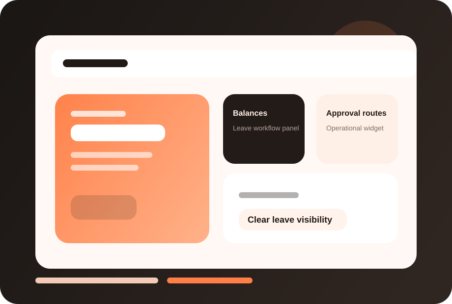

Lower admin load
HR spends less time answering routine leave questions and correcting errors.
FuzionHR Leave Management helps businesses apply leave rules consistently while giving employees and managers clear visibility into balances and approvals.

This page now has a dedicated visual treatment, stronger readability, and screenshot-ready product areas so you can drop in actual FuzionHR UI captures later.
Clearer module identity and stronger visual recognition.
Dedicated screenshot frames for real product views.
Structure remains intact while the design feels richer.
HR spends less time answering routine leave questions and correcting errors.
Employees know their balances, requests and policy status without back-and-forth.
Approved leave data stays more consistent across downstream calculations.
These screenshot frames are placeholders for your actual product UI. Once you share real captures, we can place them here with polished annotations.
Replace this frame with your real product screenshot to show the live FuzionHR UI.
Use this area for dashboards, approvals, reports or employee-facing views.